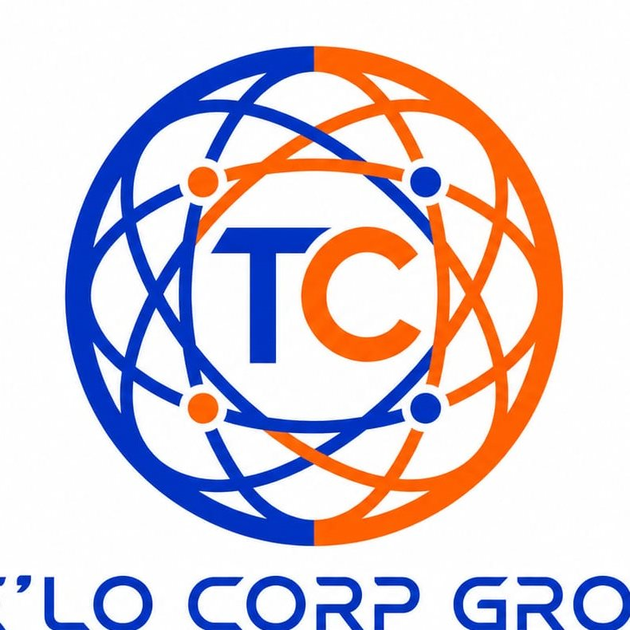
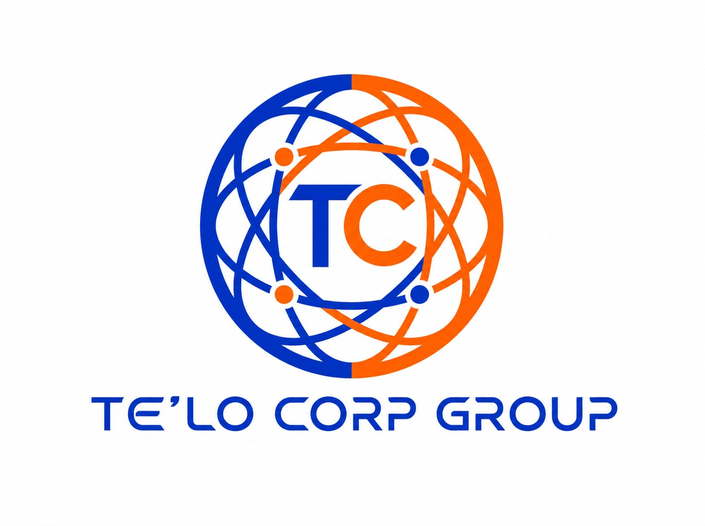

Centralizar
Una marca que recibe la necesidad y orienta al usuario hacia el departamento correcto.

TeloCorpGroup
Red integral de servicios
Una empresa por departamentos conectados que convierte necesidades cotidianas y empresariales en soluciones concretas: vender, aprender, mover, comprar, reparar, instalar y seguir creciendo desde una misma puerta de entrada.
TeloCorpGroup nace para reducir la fricción de buscar proveedores aislados. Reúne departamentos especializados bajo una misma marca, con la intención de escuchar una necesidad, entenderla bien y conectarla con el equipo que puede resolverla mejor.
Razón de ser
La mayoría de las personas no necesita “otro servicio” suelto: necesita una ruta clara. TeloCorpGroup existe para ordenar esa ruta, unir capacidades y construir una red confiable donde cada departamento tenga un rol, pero todos trabajen con una misma responsabilidad frente al usuario.
Una marca que recibe la necesidad y orienta al usuario hacia el departamento correcto.
Servicios que pueden trabajar juntos cuando una solución requiere más de una capacidad.
Una estructura preparada para sumar nuevas unidades sin perder orden, identidad ni seguimiento.
Departamentos de servicio
Ventas, prospección, gestión comercial y creación de oportunidades para usuarios, marcas y negocios.
Entrenamiento práctico para desarrollar habilidades, formar equipos y elevar la calidad del servicio.
Mensajería, entregas y movimiento de encargos con trazabilidad, rapidez y atención cercana.
Compras, intercambios y conexiones entre personas que quieren adquirir, vender, negociar o comparar.
Soporte técnico para diagnóstico, mantenimiento y reparación de equipos, hogares y espacios.
Instalaciones y servicios en campo para proyectos domésticos, comerciales y operativos.
Modelo operativo
Una solicitud puede comenzar como una compra, convertirse en una instalación, requerir mensajería y terminar con soporte técnico. Por eso el modelo no trata cada servicio como una isla: lo ordena, lo asigna y lo acompaña hasta que el usuario tenga una respuesta.
Próxima etapa
Este sitio es el punto de partida para presentar la visión, ordenar las unidades de servicio y abrir canales para clientes, aliados y equipos que quieran construir dentro del ecosistema TeloCorpGroup.
Iniciar conversación